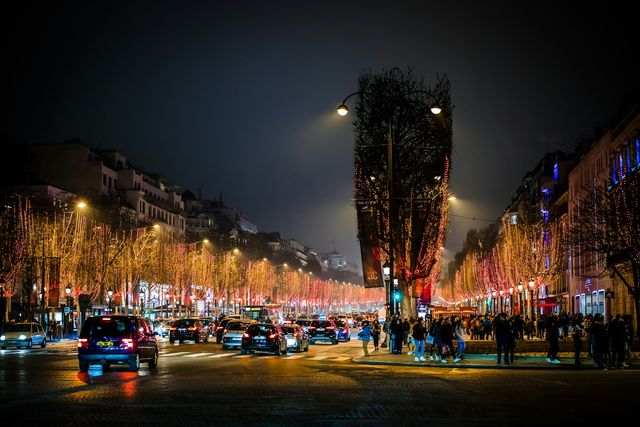

Idées pour cet hiver
Nos sélections de saison et l’agenda des grands rendez-vous, mis à jour chaque mois.
-

Neige garantie en altitude, illuminations de Noël à Paris ou douceur méditerranéenne : l’hiver est une saison idéale pour voyager en France, à condition de bien choisir ses dates.
-

Illuminations, marchés de Noël, grandes expositions et musées en nocturne : l’hiver est une excellente saison pour visiter Paris, avec moins de monde dans les monuments.
-

Moins de monde, une lumière superbe et les grandes fêtes de février : l’hiver est la saison préférée des connaisseurs pour découvrir la Riviera.
-

Envie de skier tôt ? Voici les dates d’ouverture annoncées par les grandes stations des Alpes pour la saison 2026-2027, de la plus précoce à la plus tardive.
-

De 44 € à 84,20 € la journée : le comparatif de 24 stations des Alpes et des Pyrénées.
-

Strasbourg, Colmar, Riquewihr et Kaysersberg : les dates 2026 et un itinéraire en deux jours.
-

Le feu d’artifice des Champs-Élysées, les dîners sur la Seine et les soirées de la Côte d’Azur.
-

Les dates des zones A, B et C, la semaine la plus chargée et où partir.